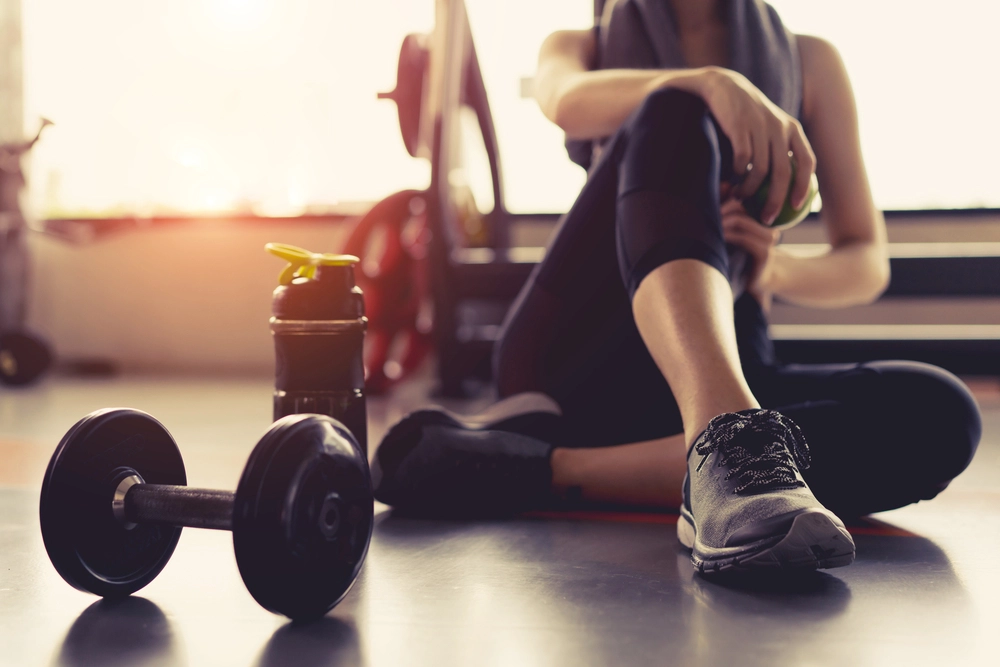
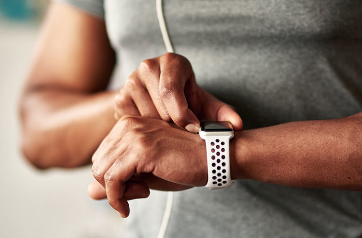
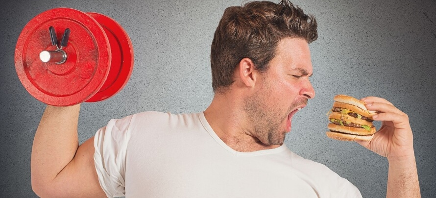

Matters
Matters
Frequently Asked Questions
What this site is about?
We created this site so we can spread words and awereness about fitness through articles
Where can I find information about COVID-19?
Go to COVID-19 alert page where we provide lattest information related to COVID-19
Do we provide personal assistance?
unfortunately, we don't provide personal assistance for fitness currently.
Do you have application for mobile devices?
we do not offer mobile apps. However, the our website's browser experience is optimized for all mobile devices
What if I have questions about my symptoms or need health advice?
wellnessmatters.com is a general health information website. We do not give health advice for specific conditions. If need health advice, please call your local health center
If you’re having a medical emergency, call 911 or go to your nearest emergency department right away.
How much should the average adult exercise every day?
As a general, you should aim for minimum half and hour of moderate physical activity every single day. If you have a specific goal like you want to lose weight, maintain weight loss, you may need to exercise more.
How often should I track my weight?
Nicky Holender recommends weighing yourself daily every morning when you wake up. At a minimum, you should track your weight at least once a week to monitor changes. Also, if you weigh yourself the same day each week, it will be easier to remember.

I wear a heart rate monitor. Can I manually track how many calories I burn in a workout?
Yes! Each person is different and heart rate monitors are an excellent and more accurate method to keeping track of calories burned.
Eating Back Calories Burned Via Exercise
Here's an explanation about the difference between total calories consumed -- the number of calories you take in each day -- and net calories, which is that number minus any calories you burn through exercise: We know one pound is the equivalent of 3500 calories. Let's say you can eat 2200 calories a day and maintain your current weight. That's 15,400 calories/week. If you decide you want to lose a pound a week, then we know you have to "lose" a total of 3500 calories each week, to create the calorie deficit that will translate to losing that pound. To eat 3500 calories fewer each week, which is the same as 500 calories/day, your normal 2200/calories a day becomes 1700 (2200-500 = 1700).
